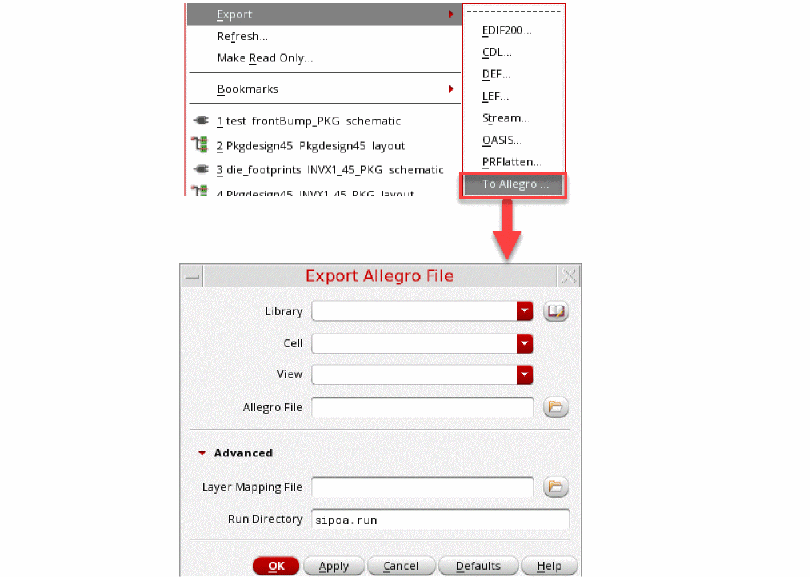
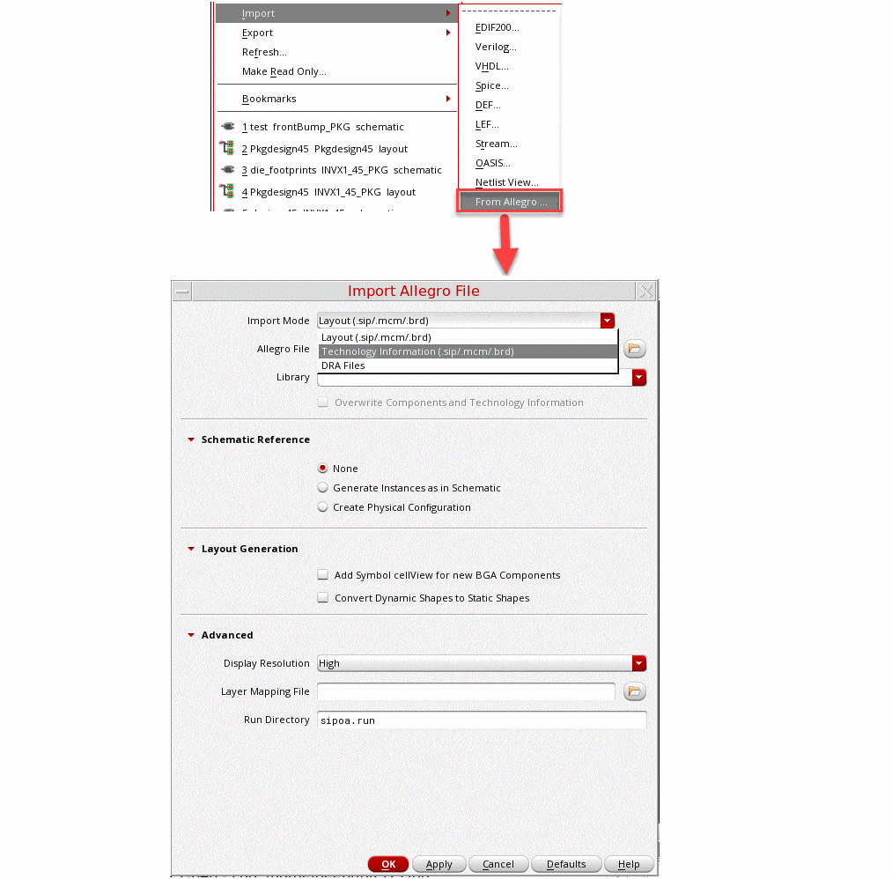
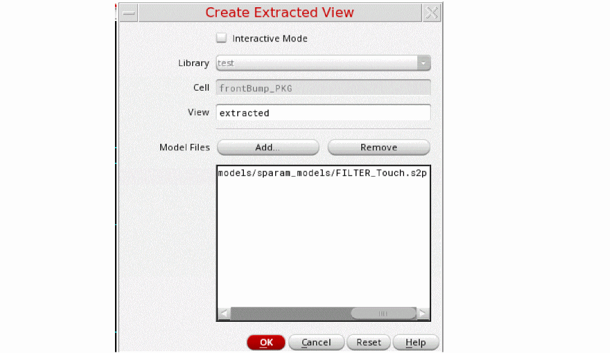

9
Interoperating with SiP
The Virtuoso RF Solution is a schematic driven package layout flow in Virtuoso that provides the capability to finish the package in Allegro. Therefore, interoperability with Allegro for package design should be robust to support seamless data transfer. The data models in Allegro and Virtuoso have significant differences and the gap needs to be bridged. The Allegro translators are invoked from Virtuoso and require a license for the SPB tools based on the type of the input or output database.
The chapter includes the following sections:
- Exporting Package Layout
- Completing the Package Layout
- Importing the Package Layout
- Rebinding the Layout to the Schematic
Due to the differences in the underlying SiP and OA databases, the object representations in SiP and OA are sometimes not entirely equivalent. Once the object has been translated from SiP to OA, it might not restore to its original SiP representation from the OA representation. Consequently, the translation of a SiP design to OA and back to SiP might be different from the original one. However, the physical layouts created from the two design representations are equivalent from the manufacturing and analysis point of view up to a certain tolerance.
For details, refer to
The following SPB layout design tools are involved in the export and import of the layout information:
-
.sipfile from Cadence SiP Layout (SiP) -
.mcmfile from Allegro Package Designer (APD) -
.brdfile from Allegro PCB Designer (Allegro)
Exporting Package Layout
When exporting the package layout, the Allegro translator creates a .sip file from the OA library (specified cellview) that has been created or modified to ensure it has the same structure.
During export to Allegro, the data is translated in the following two steps:
- Open the OA design and write its contents or just the updated content to an intermediate file.
-
Read the intermediate file in the SPB tool and create or update the
.sipdesign from its contents.

Completing the Package Layout
Once the translation is done, launch Cadence SiP Layout XL to view and modify the package layout as needed.
Allegro layout editors provide manual and automatic tools for placing components, routing, and wire bonding. For details, refer to
Manual and Automatic Placement
With manual placement, you can place elements individually or place elements of the same type during one pass.
In automatic placement, the layout editor places elements based on placement properties you assign that restrict or influence component positioning and part packaging.
In either manual or automatic placement, you can:
- Selectively identify certain parts for placement by attaching a placement “tag” to them.
-
Optionally create a floor plan, which is a block diagram of rooms in a design. Rooms are rectangular areas that you create.
You can use rooms to keep specific logical functions or related elements together in specific areas.
You may want to alternate manual placement with automatic placement. You can preplace sensitive or fixed parts manually, run automatic placement, and then rearrange some autoplaced parts. You could finish by optimizing the overall placement of a design with manual placement.
Placement Tasks
You can use any combination of placement and swap tools. For example, component placement typically involves the following activities:
- Determining design requirements.
- Creating the items required for placement processing (such as grids or package keepin and keepout areas).
- Setting basic placement controls, such as package keepout and keepin areas, placement properties, and automatic placement parameters.
- Running manual placement alternately with automatic placement. You can run different iterations of automatic placement and view the placement results.
- Reviewing placement status and automatic placement results.
Routing Tasks
The PCB layout editor provides tools that help you perform the following when routing physical designs:
- Interactive routing
- Automatic routing with Allegro PCB Router
- Glossing to improve the appearance and manufacturability of a physical design
The following list describes a flowchart of the basic routing process. The basic routing flow—assuming automatic routing—is the following:
- Prepare for routing:
- Manually route critical nets.
- Define routing parameters in Allegro PCB Router to control how automatic routing functions.
- Run Allegro PCB Router.
- Review routing results.
- Interactively finish or correct etch.
- Gloss the design.
- Optionally analyze the design for signal integrity or EMI.
For details, refer to
Importing the Package Layout
When importing the package layout, the Allegro translator can be run in two modes, non-incremental and incremental mode.
In the non-incremental mode, it imports a .sip file to the OA library that has been created or modified to ensure it has the same structure as created during the export.
While importing, the translator creates an OA library file from an input database created by one of the SPB layout design tools. It translates the data in two steps:
- Open the design in the SPB tool and write its content (in incremental mode) to an intermediate file.
- Read the intermediate file in Virtuoso and create the OA data from its content (in incremental mode).
You can import a .sip, .mcm,.brd, or a catalog of .dra files. During import, the translators create a layer stack up and constraints in techdb and TILPs for SMDs or dies.
When you translate the data from SiP into Virtuoso, the relevant file is created by a package designer. It contains the BGA cell, the vias to be used for package routing, and the technology file used in SIP. This technology file is compiled into the Virtuoso tech.db that is in the package library. The package technology file is not the same as the IC technology file. In contrast, Edit-in-Concert in the Virtuoso RF Solution lets you seamlessly switch between the different technology files. You can also import the locations of IO pads on a die. This information is stored in a bump location file, which can be used later to create and align IO pads in an adjacent die.
To import the SiP file to Virtuoso, which contains the BGA and package techfile:
-
Click CIW – File – Import – From Allegro…
The Import Allegro File form opens.
 - Specify Import Mode and Library.
- Select Add Symbol cellview for new BGA Components.
- Click OK.
- Check Library Manager to ensure that the cells have been added appropriately.
Rebinding the Layout to the Schematic
This section covers rebinding the updated layout to package schematic.
-
Create the extracted view by clicking Create Extracted View in the RF-Module menu.
 - Back annotate the parasitic models from the extracted view on the master schematic by using Annotate from Extracted View.
Return to top